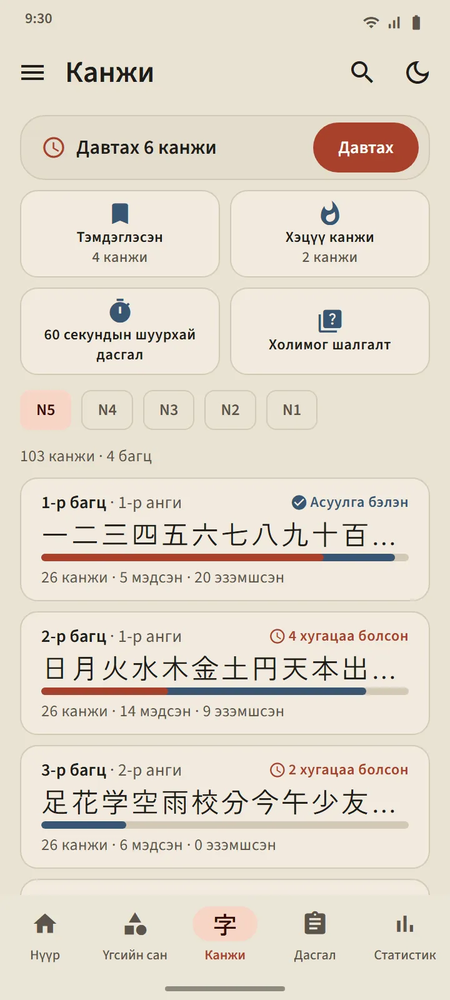
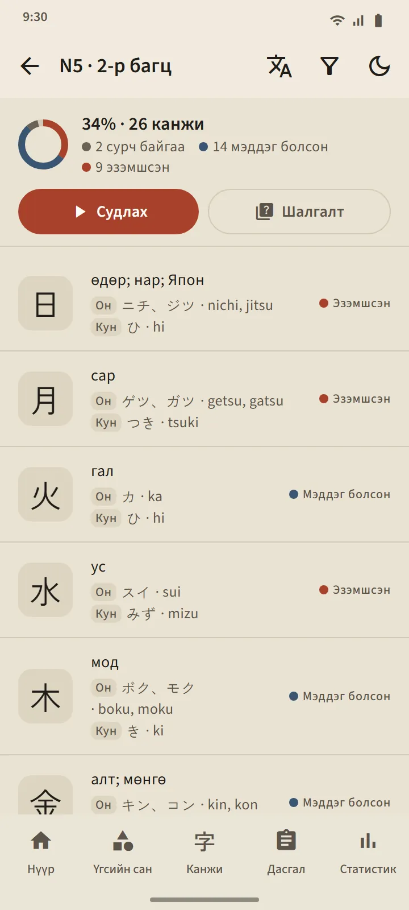
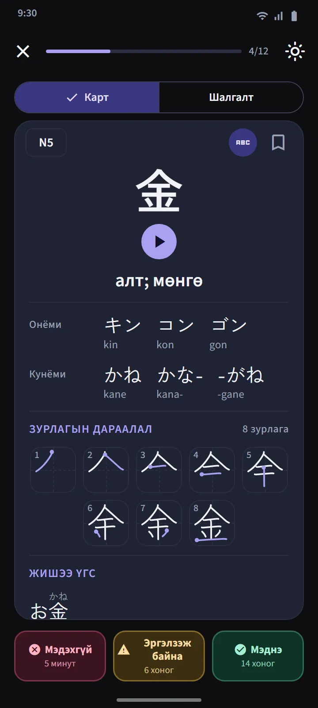
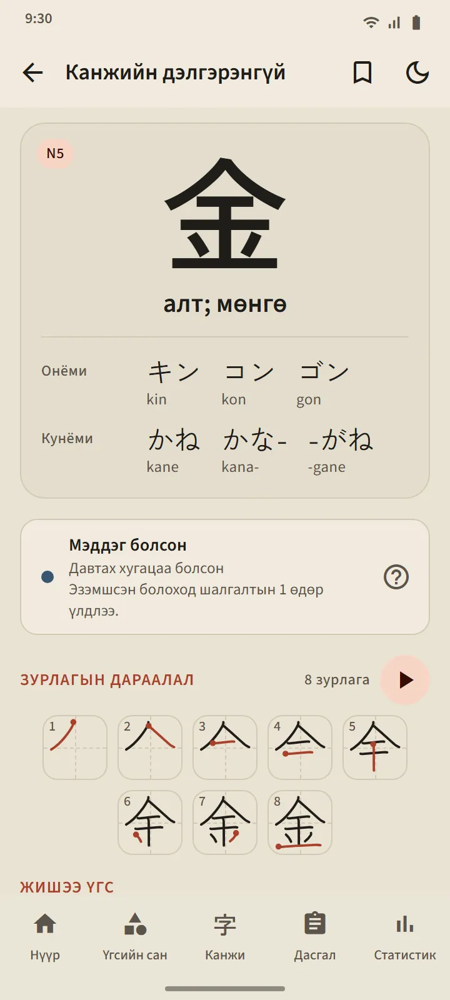
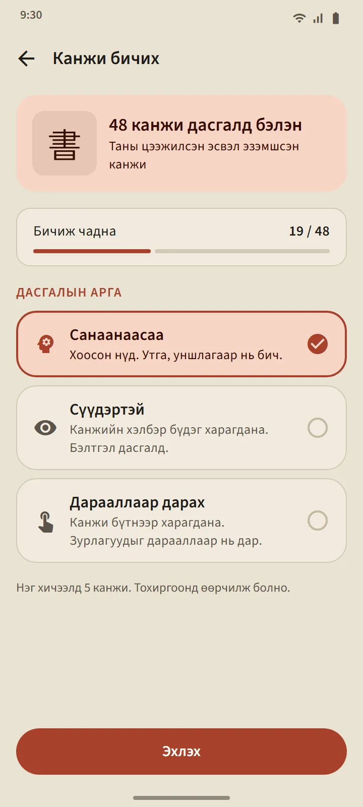
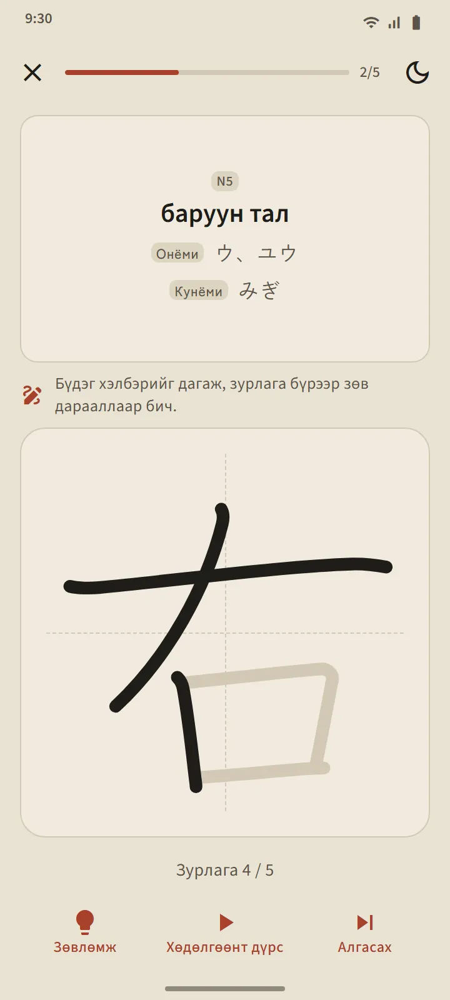

Япон сургуулийн дарааллаар 25 канжийн багц
Канжи таб JLPT-ийн түвшнээр, дараа нь ойролцоогоор 25 канжийн багцад хуваагдана. Түвшин доторх дараалал япон сургуулийн хөтөлбөрийг (1-р анги эхэнд), дараа нь цөөн зураастайгаас эхэлсэн зураасны тоог дагана; тоо, гарагийн нэр, улирал зэрэг хамт сурах дарааллыг цэгцтэй нь хадгалсан. Багцын мөр бүр канжиг, ахицын зурвас, мэддэг болон эзэмшсэн тоо, мөн «Асуулга бэлэн» хаяг эсвэл хугацаа нь болсны тоог харуулна.
| Түвшин | Канжи | Хандалт |
|---|---|---|
| N5 | 103 | Үнэгүй |
| N4 | 181 | Үнэгүй |
| N3 | 370 | Premium |
| N2 | 369 | Premium |
| N1 | 1,207 | Premium |


Канжи карт ба шалгалт
Картын нүүрэнд зөвхөн канжи байна. Ар талд: утга, On ба Kun уншлага (хүсвэл ромажитай), зураас бүрт нэг кадртай, эхлэх цэгийг тэмдэглэсэн зураасны дарааллын диаграм, мөн түүнийг ашигласан жишээ үгс. Үгийн картын адил гурван товч дахин товлоно.
Багцын шалгалт 10 канжи Мэддэг болсон эсвэл Эзэмшсэн болмогц нээгдэж, гурван төрлийн асуулттай: канжиас утга, утгаас канжи, канжиас уншлага. Эзэмшсэн болох дүрэм ижил: гурван өөр өдөр шалгалтад зөв хариулах. Табын дээд талын Канжи давтлага бүх багцаас хугацаа нь болсон канжийг цуглуулдаг бөгөөд холимог шалгалт багцуудыг дамжуулан шалгана.

Канжийн дэлгэрэнгүй ба тусгай багц
Канжи бүрийн дэлгэрэнгүй хуудас утга, шат ба дараагийн давтлага, уншлага, зураасны диаграм, жишээ үгийг агуулна; үгийн дэлгэрэнгүй хуудаснаас бүрдүүлэгч канжи руу холбоос бий. Үгсийн сангийн адил канжид Тэмдэглэсэн, Хэцүү, 60 секундын шуурхай дасгал багцууд байх бөгөөд Нүүр дэлгэцийн хурдан дасгалын хэсэг дэх сэлгэгч түүний дөрвөн хавтанг канжийн хувилбар руу шилжүүлнэ.


Канжийг хуруугаараа бичээрэй
Таны Мэддэг болсон эсвэл Эзэмшсэн канжийг бичиж дадлагажуулж болно: зөвхөн утга ба уншлага харагдана, та зураас зураасаар бичнэ, зураас бүрийн хэлбэр, чиглэл, дарааллыг интернэтгүйгээр шалгана. Гурван горим: Санаанаасаа, Сүүдэртэй, Дарааллаар дарах. Канжийг хоёр өөр өдөр тусламжгүйгээр санаанаасаа бичвэл «Бичиж чадна» гэж тооцогдоно.


Канжийн үндэс
Канжи цээжилж эхлэхээс өмнө канжи хэрхэн бүтдэгийг заах 11 богино хичээл: онёми ба кунёми, аль нь хэзээ хэрэглэгддэг, окуригана, っ ба рэндакү зэрэг өөрчлөгддөг авиа, бүтэн үгээр цээжилдэг уншлага, радикал, зурлагын дараалал. Нүүр хуудасны "Япон хэлний үндэс" хэсгээс нээгдэх бөгөөд үнэгүй.
Өгөгдлийн эх сурвалж
Утга ба уншлага KANJIDIC-ээс (Electronic Dictionary Research and Development Group), зураасны дараалал KanjiVG-ээс ирсэн бөгөөд хоёулаа CC BY-SA лицензтэй. Канжийн түвшин нь хуучин JLPT жагсаалт дээр суурилсан тооцоо; одоогийн JLPT албан ёсны канжийн жагсаалт нийтэлдэггүй.